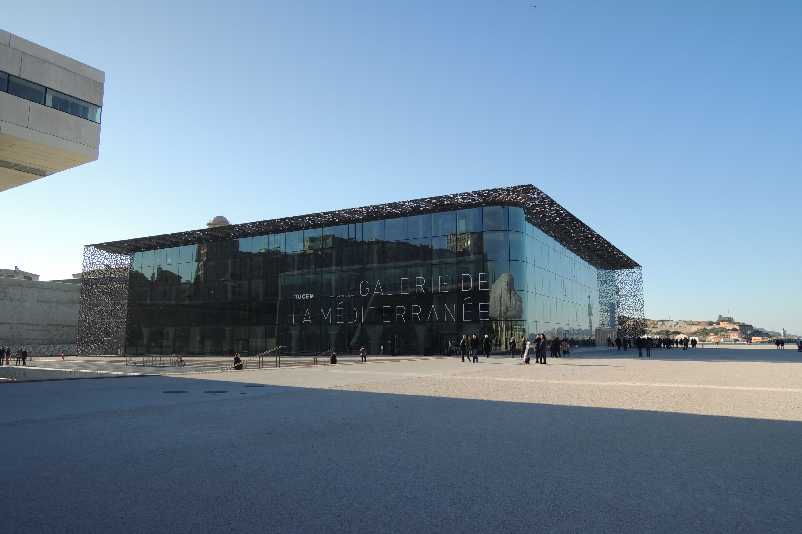
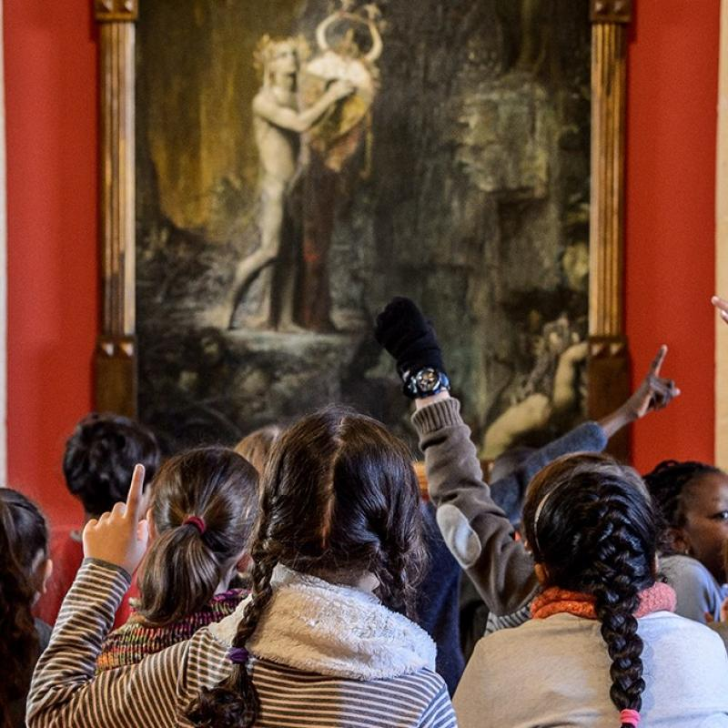

palais lamgchamp
Le palais abrite deux musées: le Musée des beaux Arts et le Muséum d'Histoire Naturelle. En près de deux siècles, le Muséum d'histoire naturelle a rassemblé des témoignages inestimables du patrimoine naturel qu'il met à la disposition du public et des scientifiques dans les salles de zoologie, d'ostéologie et de préhistoire ou encore en Salle de Provence.

MUCEM Musée des civilisations de l'Europe et de la Méditerranée
Le Mucem est un ensemble de trois sites le J4, le Fort Saint-Jean et le Centre de Conservation et de Ressources
Adresse:7 Promenade Robert Laffont - 13002 Marseille
contact: 04 84 35 13 13

Musée d'Histoire de Marseille
Ce musée de la plus ancienne ville de France permet de découvrir 26 siècles d'histoire où se mêlent archéologie, beaux arts, objets du quotidien et architecture.
Adresse:2 rue Henri Barbusse - 13001 Marseille
Contact:
Téléphone - 04 91 55 36 00
-Mail : musee-histoire@marseille.fr

La Vieille Charité
Aujourd'hui le Centre de la Vieille Charité abrite plusieurs structures multi-culturelles : le Musée d'Archéologie Méditerranéenne, le Musée des Arts Africains, Océaniens, Amérindiens (M.A.A.O.A), des expositions temporaires et une salle de cinéma
Adresse:2, rue de la Charité
13002 Marseille
Contact: 04 91 14 58 46

Le Mémorial des déportations
Le Mémorial des déportations, les politiques de répression et de persécution à Marseille durant la Seconde Guerre mondiale, les traces d'une histoire singulière.
Adresse:Avenue Vaudoyer
13002 Marseille
Contact:04 91 55 36 00
Mail:musee-histoire@marseille.fr

Préau des Accoules
L'équipe du Préau des Accoules conçoit et réalise des expositions ludiques à destination des enfants pour une approche originale de l'objet d'art.
Adresse:29 montée des Accoules
13002 Marseille
Contact:04 13 94 83 85